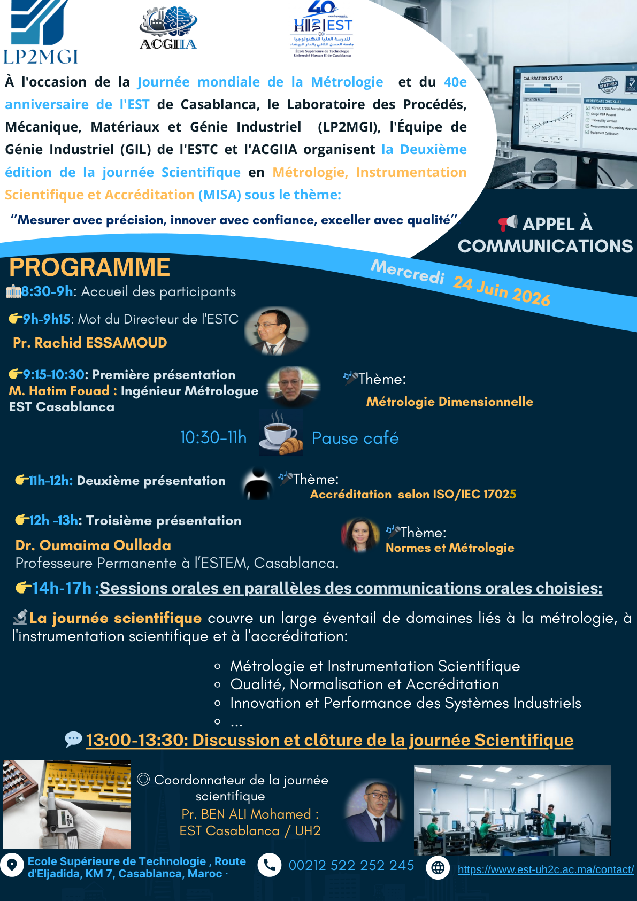

Métrologie dimensionnelle
Techniques de mesure dimensionnelle, traçabilité métrologique et contrôle pour garantir la fiabilité des résultats scientifiques et industriels.
2e édition
Journée Scientifique en Métrologie, Instrumentation Scientifique et Accréditation
« Mesurer avec précision, innover avec confiance, exceller avec qualité »
Dans un contexte industriel en constante évolution, les entreprises doivent innover, intégrer les technologies avancées et maîtriser la complexité croissante de leurs systèmes de production. L'Industrie 5.0 et l'intelligence artificielle (IA) transforment les modèles traditionnels vers des systèmes plus intelligents, agiles et durables.
Les systèmes industriels modernes sont confrontés à des enjeux majeurs : qualité, productivité, maîtrise des coûts, sécurité au travail, traçabilité et durabilité — impliquant une convergence entre la gestion de la production, la maintenance intelligente, la sécurité de l'alimentation et la maîtrise des mesures.
C'est dans cette dynamique, et à l'occasion de la Journée mondiale de la Métrologie marquant également le 40e anniversaire de l'EST de Casablanca, que s'inscrit cet événement. Le Laboratoire de Procédés, Matériaux, Mécanique et Génie Industriel (LP2MGI), l'Équipe de Génie Industriel et Logistique (GIL) de l'ESTC et l'ACGIIA organisent la 2e édition de la JS-MISA 2026.
Placée sous le thème ci-dessus, cette édition se veut un carrefour interdisciplinaire dédié à la recherche appliquée et à l'innovation technologique. Elle vise à renforcer la traçabilité, la conformité aux normes (notamment l'accréditation ISO/IEC 17025) et à structurer un rapprochement durable entre l'université, l'industrie et la société.
Les thématiques couvrent l'ensemble des disciplines gravitant autour de la métrologie, de l'instrumentation, de l'intelligence artificielle et de l'accréditation.
Mot d'ouverture
Directeur de l'ESTC
Mot d'ouverture
Coordonnateur JS-MISA — ESTC, UH2C
Métrologie dimensionnelle
Ingénieur Métrologue, EST Casablanca
Accréditation ISO/IEC 17025
LPEE
Normes & Métrologie
Professeure Permanente à l'ESTEM, Casablanca
Laboratoire de Procédés, Matériaux, Mécanique et Génie Industriel
Équipe de Génie Industriel et Logistique (GIL) de l'EST de Casablanca
Partenaire de l'organisation de la JS-MISA 2026
Consultez l'affiche et la plaquette officielles de la JS-MISA 2026.

La participation par communication est gratuite. L'événement est ouvert aux chercheurs, enseignants, doctorants, étudiants et professionnels du secteur industriel.
S'inscrire par e-mail
Mercredi 24 juin 2026 · 8h30 – 17h30
École Supérieure de Technologie
Route d'El Jadida, Km 7 — Casablanca, Maroc
Les résumés doivent être envoyés en format Word (.doc ou .docx) par e-mail à estc.benali@gmail.com.
Le résumé ne doit pas dépasser 3 pages. Une notification d'acceptation sera envoyée dans les délais communiqués dans le calendrier officiel.
Envoyer un résumé
École Supérieure de Technologie (ESTC)
Route d'El Jadida, Km 7
Casablanca, Maroc
Coordonnateur : Mohamed BEN ALI (ESTC, UH2C)
E-mail : estc.benali@gmail.com
Téléphone : +212 662 209039